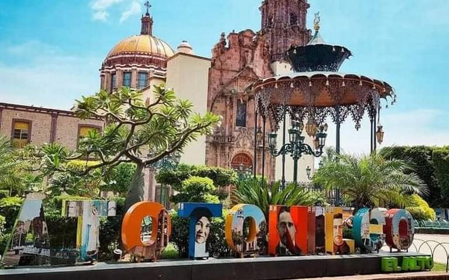
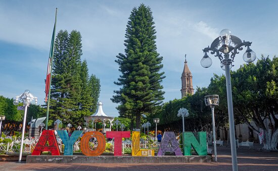
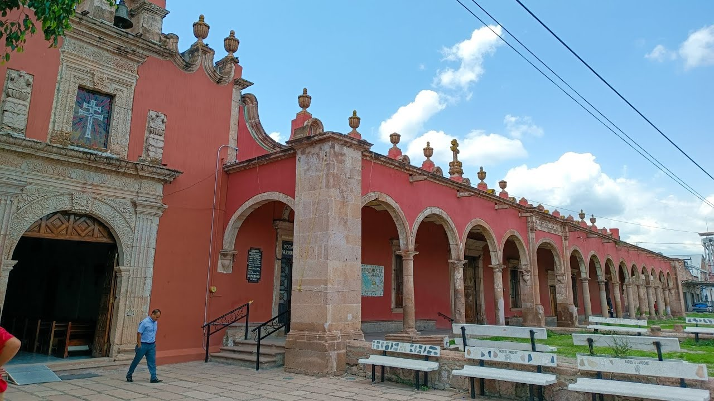
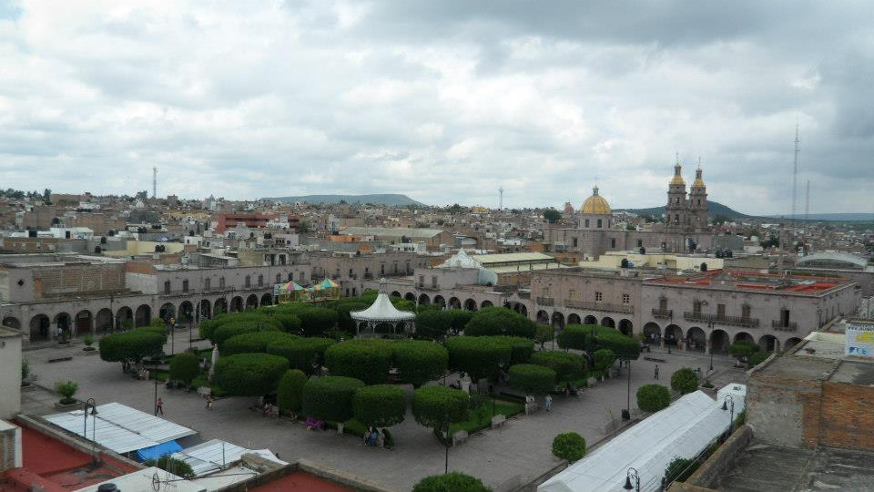

⌕
01
Arandas
Jalisco
02
Jesús María
Jalisco
03
San Ignacio
San Ignacio Cerro Gordo, Jalisco

04
Atotonilco
Atotonilco el Alto, Jalisco
05
San Francisco de Asís
Jalisco

06
Ayotlán
Jalisco
07
Degollado
Jalisco

08
Santa Ana Pacueco
Guanajuato

09
San Miguel el Alto
Jalisco

10
Chapala y alrededores
Chapala, Ajijic y San Antonio Tlayacapan
11
Tepatitlán
Tepatitlán de Morelos, Jalisco
No encontramos esa localidad.